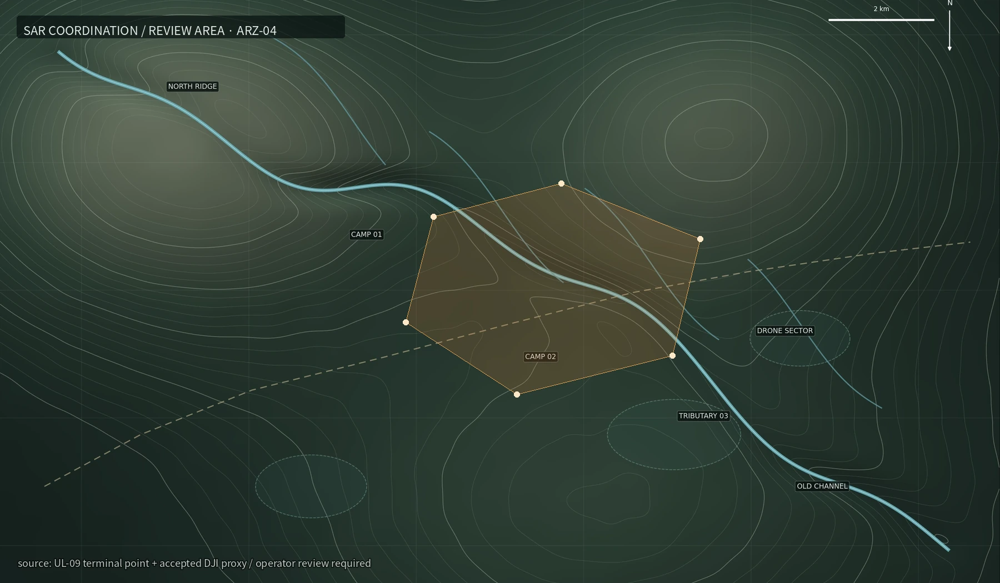

SEARCH & RESCUE COORDINATION / SUPPLEMENTARY EVIDENCE RECEIPT
补充材料已进入地面路线复核
案件 EM-2026-0924-ARZ · W-3 复核扇区
SOURCE CHAIN VALIDATED
ROUTE REVIEW / ACCEPTED
ROUTE REVIEW / ACCEPTED

2.4131N, 114.2296E · residual 11.4 m · sector W-3
复核区域
2.4131N, 114.2296E（DJI proxy registration / residual 11.4 m）
来源链
GPSMAP 67i · UL09_rain_gauge_0918-0922 · DJI_0509_PROXY.JPG
交叉核对
09/22 17:30 累计雨量 278.10 mm · GPS 末端相对计划线节点 07 西偏
处理状态
已进入 W-3 地面路线复核；人员状态待联合搜救组确认
W-3 路线包包含地形、降雨、设备时间与影像配准记录；人员身份与社区叙述未写入现场路线标签。
西侧旧河槽加入地面复核扇区，公开图幅只保留进入路线与撤离方向，不标示临时营地。
搜救队在旧河槽西侧发现部分科考装备，设备编号与本季清单相符；公开通报没有确认队员状态。
雨林大学确认后续信息继续由联合搜救组统一发布，研究项目公共站停止追加未经审计的现场叙述。
这份回执已经是系统能给出的最后一页。后面的现场进展不再属于这条公开记录。
关闭案卷 · 结束本次调查 →